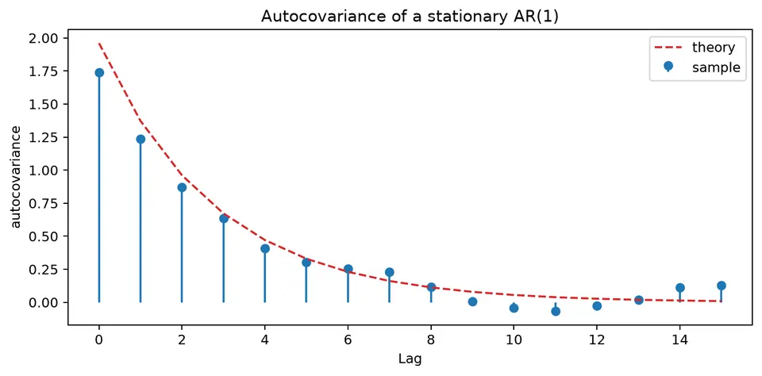

Autocovariance Functions and Coefficients
Take two observations from the same series, subtract the appropriate mean from each, and multiply the deviations. A positive product means that both observations are on the same side of their means; a negative product means that they are on opposite sides. Autocovariance is the expectation of this product for observations separated in time.
At lag 0, the two deviations are the same, so autocovariance reduces to variance. At a nonzero lag, it describes the direction and scale of linear association across that separation. It is a property of the joint process, rather than a regression coefficient or a causal effect.
A general process needs a covariance indexed by both dates. Weak stationarity makes a substantial simplification: pairs separated by the same lag share the same population covariance, regardless of where they occur in the record. We can then estimate a lag function from repeated pairs along one path, provided the dependence conditions allow the sample averages to be informative.
Autocovariance retains the measurement scale. Multiplying every observation by 10 multiplies each centered product by 100. Dividing by the lag-0 variance removes that scale and produces autocorrelation.
Worked calculation: a lagged covariance
For $x=(1,2,4,3)$, the mean is $\bar x=2.5$, so the centered values are
$$ z=(-1.5,-0.5,1.5,0.5). $$
Using the convention that divides by $n$, the lag-0 autocovariance is
$$ \hat\gamma(0)=\frac{1}{4}(2.25+0.25+2.25+0.25)=1.25. $$
At lag 1,
$$ \hat\gamma(1)=\frac{1}{4}\{(-1.5)(-0.5)+(-0.5)(1.5)+(1.5)(0.5)\}=0.1875. $$
The lag-1 numerator is 0.75. Dividing it by the full sample size 4 gives 0.1875; dividing by the three available pairs gives 0.25. These are two conventions applied to the same observations, not contradictory arithmetic. Record the convention before checking software output. In both cases the product has squared data units, and converting it to an autocorrelation requires using the corresponding lag-0 estimate consistently.

The figure shows the lag pattern of a simulated autoregressive series. Autocovariance describes how the series varies jointly with lagged versions of itself; its magnitude also reflects the variance scale of the observations.
An AR coefficient and an autocovariance play different roles. The coefficient specifies how a past value enters the model equation, while the autocovariance summarizes the joint variation implied by the complete model. Neither a large autocovariance nor its sign, on its own, identifies a causal influence.
Random variables and realizations
A random variable (r.v.) maps outcomes in a probability space to real numbers. Random variables may be discrete or continuous.
- A discrete random variable takes values from a countable set. For example, $X$ might take values in $\{45,36,27,\dots\}$.
- A continuous random variable can take any value in a continuous range. For example, $Y$ might take values in $(10,60)$.
A realization is a specific observed value of a random variable. Using the example supports above, possible observed values are $x=36$ and $y=30.29$. Lowercase letters distinguish these realized numbers from the random variables $X$ and $Y$ whose distributions describe the possible observations.
Covariance
Covariance averages the product of two centered random quantities. Centering is essential: it separates their joint fluctuations from their typical levels. Without it, a large positive mean in each variable could make $E(XY)$ large even when the fluctuations are independent. The definition below subtracts those means before forming the product:
$$ \text{Cov}(X,Y)=E\left[(X-\mu_X)(Y-\mu_Y)\right], $$
where $\mu_X=E[X]$ is the mean of $X$, $\mu_Y=E[Y]$ is the mean of $Y$, and $E[\cdot]$ denotes expectation.
Covariance is symmetric:
$$ \text{Cov}(X,Y)=\text{Cov}(Y,X). $$
Useful identities include:
- $\text{Var}(X)=\text{Cov}(X,X)$
- $\text{Cov}(X,Y)=E[XY]-E[X]E[Y]$
- $\text{Var}(X)=E[X^2]-(E[X])^2$
- $\text{Var}(a+bX)=b^2\text{Var}(X)$
- $\text{Cov}(aX+bY,cZ+dW)=ac\,\text{Cov}(X,Z)+ad\,\text{Cov}(X,W)+bc\,\text{Cov}(Y,Z)+bd\,\text{Cov}(Y,W)$
- $E\left(\sum_i X_i\right)=\sum_i E(X_i)$
The sign of covariance describes the direction of a linear relationship:
- If $\text{Cov}(X,Y)>0$, larger values of $X$ tend to occur with larger values of $Y$.
- If $\text{Cov}(X,Y)<0$, larger values of $X$ tend to occur with smaller values of $Y$.
- If $\text{Cov}(X,Y)=0$, there is no linear covariance between $X$ and $Y$, although a nonlinear relationship may still exist.
Read each lagged pair as a point relative to the two mean lines. Points in the upper-right and lower-left regions make positive contributions because the centered values share a sign. Points in the other two regions make negative contributions. Their average determines covariance. A curved arrangement can contain strong dependence while these signed products cancel, so zero covariance does not establish independence.

Estimation of Covariance
For paired observations $(x_1,y_1),(x_2,y_2),\dots,(x_N,y_N)$, the usual sample covariance is
$$ s_{xy}=\frac{1}{N-1}\sum_{t=1}^{N}(x_t-\bar x)(y_t-\bar y), $$
where
- $\bar x=\frac{1}{N}\sum_{t=1}^{N}x_t$ is the sample mean of $x$,
- $\bar y=\frac{1}{N}\sum_{t=1}^{N}y_t$ is the sample mean of $y$,
- $N$ is the number of paired observations.
For ordinary paired data, every row contains two measured variables. For lag-$k$ pairs from a time series, the rows are constructed by matching $x_t$ to $x_{t-k}$. Those rows overlap and need not be independent. That is why the familiar covariance formula motivates autocovariance but does not automatically supply its finite-sample bias or uncertainty formulas.
Stochastic Processes
A stochastic process is a collection of random variables indexed by time or another ordered set:
$$ \{X_t:t\in T\}. $$
Here, $T$ is the index set, often representing time. In general, the distribution, mean, and variance of $X_t$ may depend on $t$. Stationarity introduces conditions under which these properties remain stable over time.
A time series is one realization of a stochastic process. For example, the random variables
$$ X_1,X_2,X_3,\dots $$
might be observed as
$$ 30,29,57,\dots $$
A theoretical covariance concerns repeated possible realizations of the process at selected dates. A sample covariance averages products formed from the observed path. Equating those two operations requires a justification: stable moments and enough weakening of dependence for the time average to represent the expectation. An observed coefficient is therefore an estimate with sampling variation, not a directly observed population property.
Autocovariance Function
The autocovariance function measures the covariance between two values of the same stochastic process at times $s$ and $t$:
$$ \gamma(s,t)=\text{Cov}(X_s,X_t)=E\left[(X_s-\mu_s)(X_t-\mu_t)\right]. $$
Here, $\mu_s=E[X_s]$ and $\mu_t=E[X_t]$ are the means at the two time points.
Variance is a special case. When $s=t$,
$$ \gamma(t,t)=E\left[(X_t-\mu_t)^2\right]=\text{Var}(X_t)=\sigma_t^2. $$
Thus, autocovariance extends the idea of variance from one time point to pairs of time points.
Lagged Autocovariance
For a weakly stationary process, the covariance between $X_t$ and $X_{t+k}$ depends only on the lag $k$, not on the particular time $t$. The lag-$k$ autocovariance is therefore
$$ \gamma_k=\gamma(k)=\text{Cov}(X_t,X_{t+k})=E\left[(X_t-\mu)(X_{t+k}-\mu)\right]. $$
For example, a positive lag-2 covariance means that deviations two periods apart have a positive average product. It does not say that every pair moves together or that the earlier value causes the later value. For a real-valued weakly stationary series, covariance symmetry also gives $\gamma(-k)=\gamma(k)$. Autocovariance summarizes separation, while a predictive model must specify the direction of information use.
Autocovariance Coefficients
For a time series $\{X_t\}$, the population autocovariance at lag $k$ is
$$ \gamma_k=\text{Cov}(X_t,X_{t+k})=E\left[(X_t-\mu)(X_{t+k}-\mu)\right]. $$
For a weakly stationary process, $\mu$ is constant and $\gamma_k$ depends only on $k$.
A common sample estimator, denoted here by $c_k$, is
$$ c_k=\frac{1}{N}\sum_{t=1}^{N-k}(x_t-\bar x)(x_{t+k}-\bar x), $$
where
$$ \bar x=\frac{1}{N}\sum_{t=1}^{N}x_t. $$
The summation uses only pairs whose two observations lie inside the record. At lag 1 there are $N-1$ such pairs; at lag $N-1$ there is just one. Large-lag estimates are therefore driven by very little direct information, even when the denominator convention continues to divide by $N$. A noisy isolated value far out in a correlogram should be interpreted with that shrinking pair count in mind.
Assumption of Weak Stationarity
A process is weakly stationary when its mean is constant, its variance is finite and constant, and its autocovariance depends only on the lag. Under these conditions,
$$ \gamma_k=E\left[(X_t-\mu)(X_{t+k}-\mu)\right]=\text{Cov}(X_t,X_{t+k}). $$
The sample autocovariance can then be used to estimate this lag-based dependence:
$$ c_k=\frac{1}{N}\sum_{t=1}^{N-k}(x_t-\bar x)(x_{t+k}-\bar x). $$
This estimate summarizes the direction and scale of linear dependence between observations separated by $k$ periods. To compare dependence across series with different units or variances, use autocorrelation instead.
Scale, denominator conventions, and model-implied covariance
The autocovariance at lag $h$ is
$$ \gamma(h)=\text{Cov}(X_t,X_{t-h}). $$
For a weakly stationary process, it depends on the lag rather than absolute time. Autocovariance has squared units: if temperature is measured in degrees Celsius, autocovariance is measured in degrees Celsius squared. Autocorrelation divides by the variance and is therefore dimensionless.
Sample calculation
For $x=(1,2,4,3)$, $\bar x=2.5$, and $z=(-1.5,-0.5,1.5,0.5)$. Using denominator $n=4$ gives
$$ \hat\gamma(0)=1.25,\qquad \hat\gamma(1)=0.1875. $$
The corresponding autocorrelation is
$$ \hat\rho(1)=\frac{0.1875}{1.25}=0.15. $$
At larger lags, fewer observation pairs are available. One common convention divides by $n$ at every lag, while another divides by $n-h$. State the convention whenever values are reported or compared. The divisor-$n$ version has a useful structural property: it produces a nonnegative-definite sample autocovariance sequence. Dividing by $n-h$ adjusts for the number of pairs but does not generally retain that property, nor does it make the estimator exactly unbiased when the mean is estimated.
AR(1) covariance recursion
For the stationary AR(1) process
$$ X_t=\phi X_{t-1}+\varepsilon_t,\qquad |\phi|<1, $$
with innovation variance $\sigma_\varepsilon^2$, the process variance is
$$ \gamma(0)=\frac{\sigma_\varepsilon^2}{1-\phi^2}. $$
Its autocovariance then follows the recursion
$$ \gamma(h)=\phi^h\gamma(0),\qquad h\ge 0. $$
With $\phi=0.7$ and $\sigma_\varepsilon^2=1$,
$$ \gamma(0)=1.9608,\qquad \gamma(1)=1.3725,\qquad \gamma(2)=0.9608. $$
The covariance recursion follows because the new AR(1) shock is uncorrelated with the past observation. Multiplying $X_t=\phi X_{t-1}+\varepsilon_t$ by a centered earlier value leaves the earlier covariance multiplied by $\phi$. Iterating gives $\gamma(h)=\phi^{|h|}\gamma(0)$. The coefficient determines the rate and sign pattern of decay, while $\gamma(0)$ determines its scale. Rescaling the data changes the curve's height without changing that relative decay.
Cross-covariance caution
Cross-covariance is generally asymmetric in the lag: exchanging the two series reverses the timing convention. State whether $\gamma_{XY}(h)$ means pairing $X_t$ with $Y_{t-h}$ or with $Y_{t+h}$. Then check when each value was observed or published. Common trends, common seasonality, and delayed releases can create a convincing peak without identifying a causal direction or providing information that would have been available in a live forecast.
A runnable companion is the autocovariance notebook.
Formula reference
| Quantity / model | General formula | Notes / special case |
|---|---|---|
| Covariance | $\mathrm{Cov}(X,Y)=E[(X-E[X])(Y-E[Y])]$ | Also $E[XY]-E[X]E[Y]$. |
| General autocovariance | $\gamma(s,t)=\mathrm{Cov}(X_s,X_t)$ | May depend on both calendar times for a nonstationary process. |
| Stationary autocovariance | $\gamma(h)=\mathrm{Cov}(X_t,X_{t-h})$ | Depends only on lag $h$ under weak stationarity. |
| Variance | $\gamma(0)=\mathrm{Var}(X_t)$ | Lag 0 is the process variance. |
| Symmetry | $\gamma(-h)=\gamma(h)$ | For a real-valued weakly stationary series. |
| Autocorrelation | $\rho(h)=\gamma(h)/\gamma(0)$ | Unit-free normalization of autocovariance. |
| Sample autocovariance, biased convention | $\hat\gamma(h)=n^{-1}\sum_{t=1}^{n-h}(x_t-\bar x)(x_{t+h}-\bar x)$ | Uses denominator $n$ at every lag. |
| Sample autocovariance, pair-count convention | $\tilde\gamma(h)=(n-h)^{-1}\sum_{t=1}^{n-h}(x_t-\bar x)(x_{t+h}-\bar x)$ | Another common finite-sample convention. |
| AR(1) variance | $\gamma(0)=\sigma_\varepsilon^2/(1-\phi^2)$ | Requires $\lvert\phi\rvert<1$. |
| AR(1) autocovariance | $\gamma(h)=\phi^{\lvert h\rvert}\gamma(0)$ | Geometric decay. |
| MA($q$) autocovariance | $\gamma(h)=\sigma_\varepsilon^2\sum_{j=0}^{q-h}\theta_j\theta_{j+h}$ for $0\le h\le q$ | Take $\theta_0=1$; $\gamma(h)=0$ for $\lvert h\rvert>q$. |
| Cross-covariance | $\gamma_{XY}(h)=\mathrm{Cov}(X_t,Y_{t-h})$ | Lag sign convention must be stated explicitly. |